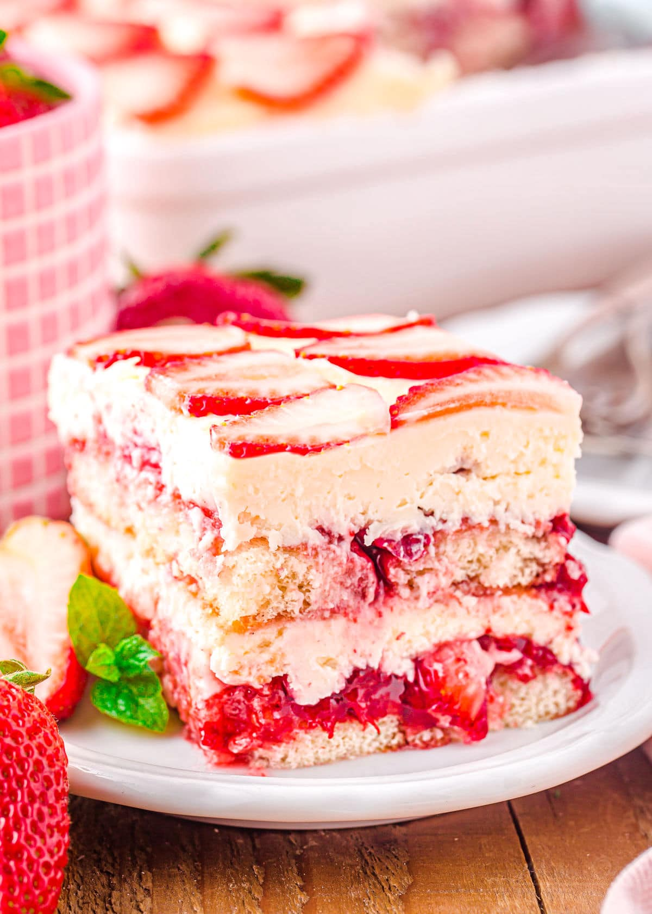

Strawberry Tiramisu

Description
Strawberry Tiramisu, my favorite summer dessert, is a sweet and
visually appealing treat loved by all. It consists of layers of
vanilla-infused mascarpone, strawberry jam-soaked ladyfingers, and plenty
of fresh strawberries! This summer variation of the famous Italian dessert
omits alcohol, raw eggs, and coffee, ensuring that everyone can indulge in
its flavors!
This no-bake delight is an excellent choice for your next summer event,
whether served in a baking dish or individual glasses. It can also be
prepared ahead of time, allowing the ladyfingers to fully absorb the
strawberry mixture and achieve a softer texture. After a day of
refrigeration, it reaches its peak of deliciousness!
Ingredients
- 1/3 cup strawberry jam
- 1/4 cup water, (or prosecco)
- 1/2 tsp balsamic vinegar, (or lemon juice)
- 1/2 cup heavy whipping cream
- 1 cup mascarpone cheese
- 1/2 cup powdered sugar
- 1/2 tsp vanilla extract
- 2 cups sliced strawberries, (1 pint)
- 24 ladyfingers
Steps
-
In a medium bowl, combine mascarpone cheese, cream, sugar, and vanilla
extract.
-
Beat with an electric mixer or stand mixer on medium-high speed for 1 to
1 1/2 minutes until smooth and thickened.
-
In a small bowl, combine strawberry preserves, water, and balsamic
vinegar. Stir with a fork until combined.
-
Dip the ladyfingers in the mixture to coat them. Line the ladyfingers in
a single layer, in the bottom of a 8”x 8” or similarly sized baking
dish.
-
Spread half of the mascarpone mixture over the ladyfingers and layer
with half of the sliced strawberries. Repeat with the remaining
ladyfingers, mascarpone mixture, and sliced strawberries.
- Cover with cling wrap and chill at least 8 hours or overnight.